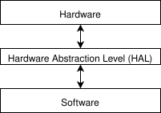

Hardware Abstraction Layer is a set of routines that allow users to communicate straight with the hardware. It provides a set of routines and APIs, which are machine-dependent and thus the user don't have to worry about compalitity.

The HAL is compiled for each different architectures and multiple instruction sets. That's the reason why it allows for the OS to be ran on multiple architectures without any changes being made to the kernel code. This means, that when the OS requests a communication straight with hardware, it uses routines from HAL in order to make it happen.
HAL really comes handy when developing driver for some device. The driver manufactor don't have to worry about developing software compatible for thousands different architectures, because the HAL is already developed for that. And so it can use easily the HAL to do HW communication.